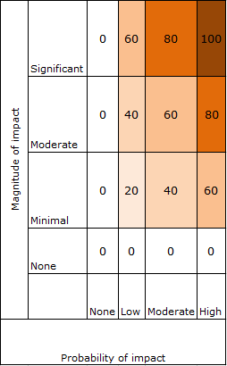

Weights
Look over the criteria below. Identify the criterion most relevant for distinguishing among stakeholder groups for this decision. Give that criterion a weight of 100. Weight all other criteria relative to that most valued criterion. Weights can be values between 0 and 100.
Once you enter the 9 criteria proceed to the Stakeholder page.
Stakeholders
Identify your stakeholder groups. Enter the name of the group and press Add stakeholder group.
Score Stakeholders
Score each stakeholder group for each of the 9 criteria. When you have scored them all press Add stakeholder scores.
Once you have entered your stakeholder data proceed to the Beneficiary page.
Magnitude & Probability of impact
If changes are made in this decision context what is the likelihood that this stakeholder group will be impacted? What is the potential magnitude of that impact?
Please enter a number 0 to 100.
Level of influence
Does this stakeholder group have any formal or informal influence over the decision making process?
Please enter a number 0 to 100.
- 100 = This group has formal influence over the decision-making process (i.e. can have the project stopped, must be consulted with).
- 50 = This group has informal influence over the decision-making process.
- 0 = This group has no influence over the decision-making process.
Level of interest
What is this stakeholder group's level of interest in this decision/action?
Please enter a number 0 to 100.
- 100 = High.
- 75 = Moderate.
- 50 = Low.
- 0 = None.
Urgency & Temporal immediacy
Does this stakeholder group want an immediate decision/action on this issue?
- 100 = Yes, even if other actions/decisions must be postponed.
- 80 = Yes, as long as it does not delay current commitments.
- 60 = They would like to see action/a decision within a relatively short timeframe.
- 40 = They would like to see action/a decision within a medium range timeframe.
- 20 = They would like to see action/a decision made, but have no timeframe for it.
- 0 = They do not care when an action/decision takes place.
Proximity
How frequently does this stakeholder group come into contact with the area subject to this decision?
- 100 = They are constantly in direct contact with the area.
- 75 = They are constantly in contact with areas adjacent to the area OR They are frequently in direct contact with the area.
- 50 = They are frequently in contact with areas adjacent to the area OR They are infrequently in direct contact with the area.
- 25 = They are infrequently in contact with areas adjacent to the area.
- 10 = They interact with this area from a distance.
- 0 = They are never in contact with the area.
Economic interest
Does this stakeholder group have an economic interest in the outcome of this decision?
- 100 = Yes.
- 0 = No.
Rights
Does this stakeholder group have any 1) legal right to be involved in this decision making process, 2) property rights associated with the land that will be impacted by the decision, or 3) consumer/user rights associated with the services that will be impacted by the decision?
- 100 = Yes, all 3.
- 60 = Yes, 2 of the 3.
- 20 = Yes, 1 of the 3.
- 0 = No.
Fairness
If this stakeholder group is not considered in decision-making, would the resulting decision be seen as unfair?
- 100 = Yes.
- 0 = No.
Underrepresented & Underserved representation
Does this stakeholder group represent underserved or underrepresented groups?
- 100 = Yes.
- 0 = No.
| Stakeholder Group | Magnitude & Probability of impact If changes are made in this decision context what is the likelihood that this stakeholder group will be impacted? What is the potential magnitude of that impact? | Level of influence
Does this stakeholder group have any formal or informal
influence over the decision making process?
|
Level of interest
What is this stakeholder group's level of interest in this
decision/action?
|
Urgency & Temporal immediacy
Does this stakeholder group want an immediate
decision/action on this issue?
|
Proximity
How frequently does this stakeholder group come into contact
with the area subject to this decision?
|
Economic interest
Does this stakeholder group have an economic interest in the
outcome of this decision?
|
Rights
Does this stakeholder group have any 1) legal right to be
involved in this decision making process, 2) property rights associated with the land that will be
impacted by the decision, or 3) consumer/user rights associated with the services that will be
impacted by the decision?
|
Fairness
If this stakeholder group is not considered in
decision-making, would the resulting decision be seen as unfair?
|
Underrepresented & Underserved representation
Underrepresented & Underserved representation: Does this
stakeholder group represent underserved or underrepresented groups?
|
|---|
Stakeholder Prioritization
Prioritization Criteria Relative Weights
Beneficiaries
Select your stakeholder from the drop down and enter the percentages in the input boxes. Each stakeholder must have beneficiary percentages which sum to 100.
Once you have entered your beneficiary data proceed to the Attribute page.
Beneficiary Prioritization
Beneficiary Profile
Attributes
Identify how much each beneficiary group cares about the listed environmental attributes by percentage. Each beneficary group must have attributes which sum to 100.